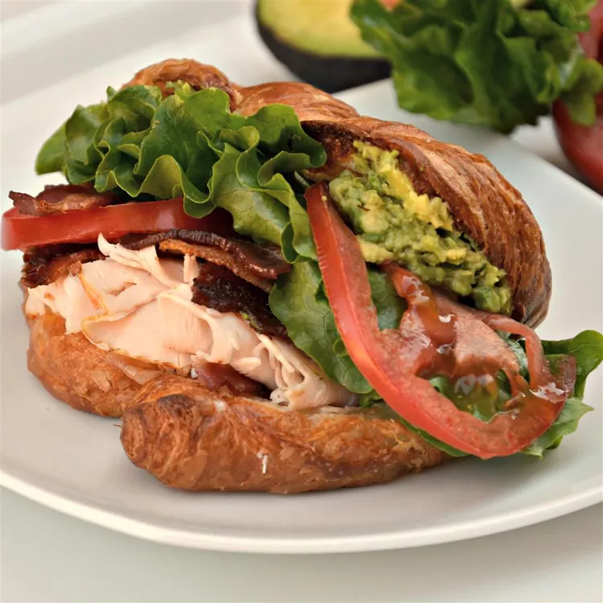

Croissant Club Sandwich

Description
This is a to-die-for club sandwich. Don't skip on the veggies. We always eat our sandwiches with a fruit salad. Perfect for a hot summer day!
Ingredients
- 2 avocados, peeled and pitted
- 1/2 teaspoon garlic salt
- 1/2 teaspoon lemon juice
- 1/4 teaspoon dried oregano
- 4 croissants, split
- 8 slices smoked deli turkey breast
- 4 slices Swiss cheese
- 8 slices cooked bacon
- 8 slices tomato
- 4 lettuce leaves
- 4 teaspoons spicy brown mustard, or to taste
Steps
- Preheat oven to 350 degrees F (175 degrees C).
- Mash avocado in a bowl using a fork or potato masher. Stir garlic salt, lemon juice, and oregano into mashed avocado.
- Arrange split croissants on a work surface. Place 2 slices turkey on bottom half of each croissant. Layer 1 slice Swiss cheese and 2 bacon slices atop each turkey layer. Place each croissant top over bacon layer. Arrange sandwiches on a baking sheet.
- Bake in the preheated oven until cheese is melted, 5 to 7 minutes.
- Open each sandwich and place 2 tomato slices and 1 lettuce leaf atop bacon layer. Lightly spread 1 teaspoon mustard and 1/4 the avocado mixture onto each croissant top. Return each top to each sandwich.